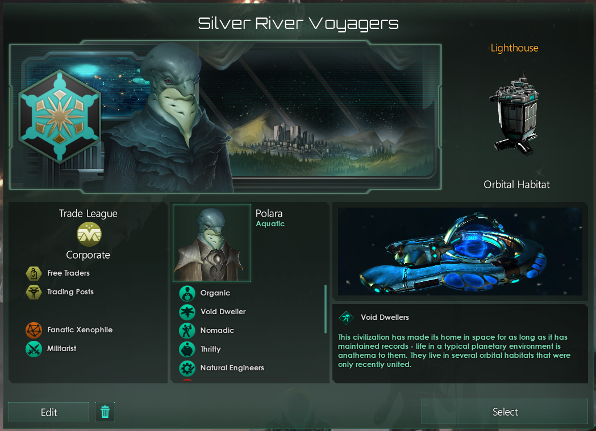

Silver River Voyagers
Discord Username: Potchama / Sparrow

History
Countless civilizations rise, and fall. The Polaran Realms were no different. Established long before the Voyagers, they unified their oceanic planet through both less prosperity more war. Occupying a small region of the galaxy, they had few planets and few resources; efficiency was paramount. The Polaran Realms could not afford waste, their trade routes flowed like the swift currents of home. But, despite their ingenuity of logistics, eventually, raw resources began to dwindle. The government attempted to barter with neighboring empires with what little energy credits they had; but those resources were directed to a crisis elsewhere. For all of the Trade logistics they had, bankruptcy was inevitable. The Polaran Realms slowly eroded to their neighbors they soon lived amongst. As the true history of the Realms fade, its legends and stories shone ever brighter.
The Polari soon found themselves in the current era; a galaxy now devoid of the vast spanning Empires of old. Polari still excel at efficiency, trade, and logistics, they have found themselves well adjusted with other species; some founding their own enterprises, the Silver River Enterprise the most profitable among them. A decent trading and hauling company, it took advantage of the Polaran apt for efficiency. Despite the new normalcy and profits, the Enterprise’s CEO Nalukala Saikou could not shake the calfhood stories of the Polaran Realms anchored deep. Nalukala soon could not bear it and gambled everything for a new opportunity.
Nalukala could not buy a planet, so her company settled for the next best thing: a habitat. (Over)-leveraging her company, Nalukala established Lighthouse in an empty system now-called Lantern Light. Echoing out a call to all of the Polari previously scattered to join in, the Polari and the Sliver River Enterprise reorganized and declared itself a new nation: the Silver River Voyagers. With a name wistfulness of its old ocean traditions, the Silver River Voyagers aim to thrive where the Polaran Realms could not. With the advent of the new galactic “Phoenix Market Directive”, the Voyagers can finally leverage their strengths in resource logistics (and storage) to overcome any resource deficits they may have had in the past. (As opposed to needing to buy it at credit market price.) Now, the Polari embark on a new voyage to establish their own, a gamble to reclaim their place on the galactic stage.
Government - Mercantile Accord
The Silver River Voyagers came as a call to Polari to join as a single nation. But, most Polari already had their own businesses and enterprises or were well involved with other xeno-corporations. Instead of demanding consolidation, the Silver River Voyagers company serves to be a blanket holding company for all Polaran enterprises. Not for profit, but for unity and cooperation. A single Polaran banner, but a multitude of services. The establishment of a Voyager branch office can have anything from luxury consumer goods to exotic performances; it is an embassy hub for Polaran business to expand to friendly nations. The single Mercantile Accord makes it easy for the Polari to coordinate logistics and politics with themselves and other empires.
Civics
Free Traders
The Silver River Voyagers is first and foremost, a holding company to better facilitate Polaran businesses in its own territory and the territory of other nations. It started as a collective call across the old Realms, and the autonomy of many businesses was the compromise for the Voyager company. Most of the business conducted under the Voyager flag are transactions between pseudo-private Polaran businesses. Polari entrepreneurs open their businesses in Voyager branch offices based on whatever is profitable. In the interest of cooperation, the Silver River Voyagers can organize which businesses are present with other foreign Empires.
Trading Posts
The Polari are known for trading, establishing where and how to trade is everything to them. Star bases are no exception. The Silver River Voyagers want to establish their trade networks far and wide to ensure that their nation shall not go bankrupt. The presence of a strong network of trading posts are a good way to ensure that. You will find no star base, no branch office, and no settlement of the Voyagers that does not have their signature commercial and trading zones.
Ethics
Fanatic Xenophile
The Polari lived and did business amongst many xenos during their dark age after the Realms. Any resentment towards neighboring species eroded away a long time ago. Now, the Voyagers want to do business, to trade, to thrive, to profit. Weary of being isolated economically, the Silver River Voyagers will attempt to create economic and military pacts with any friendly Empire willing, or even unfriendly ones (likely to their annoyance). The more nations who the Voyagers do business with, the less chance the Silver River Voyagers go into bankruptcy, and the more likely the Polaran species will make their mark on history.
Militarist
There is more money to be made in peace than war. But, in the world of commerce, competition is everything. The Silver River Enterprise was no stranger to rival companies and messy business. Perhaps a habit from the days of yore, the Polari work together ensure the survival of their company; and being passive is no way to do it. These defensive attitudes to their businesses extend to the Silver River Voyagers holding company; the the Polari will fight as hard as they can to keep what territory they have. However, the Polari are typically not interested in invading nations for territory, preferring the more profitable route of commercial pacts and trade agreements.
Species - Polara / Polari / Polaran

Traits:
-
Nomadic — The Polari are used to moving and integrating where they can. The collapse of the Polaran Realms so long ago forced a nomadic lifestyle among its diaspora. Although now glad to finally have a space to call home, they have not yet forgotten how to move and adapt. Even now, some more skeptical Polari are prepared for the collapse of the Silver River Voyagers to start their nomadic ways again.
-
Thrifty — The Polari have honed their business practices over generations. They have learned to be efficient and effective, often to great local success their their business endeavors. Their thriftiness often allows them negotiate for better value from transactions.
-
Natural Engineers — Living both out of the water and in a habitat in space demand creative engineering solutions. Their aptitude for constructing their living conditions extend to the luxury goods bought and sold throughout Silver River space, and the development of new marvels.
-
Deviants — Though not socially deviant in their own right, Polari are eager to increase their personal and company status, often at the expense of the status quo. Entrepreneurism is quite common among Polari, and even the Voyager mercantile accord itself is not so sacrosanct.
-
Fleeting — A product of an oceanic world, the Polari were thrust into the air-breathing environments of their trading partners. But, despite their engineering solutions, nature still has a tax. As a “fish out of water”, Polari often have less time to profit.
Leadership Directive
Nalukala Saikou - The Captain
Official - Charismatic
Nalukala Saikou started off as a relatively affluent Polari, having inherited the Silver River Enterprise from her uncle who started it as a captain on a small frigate, she grew it to span the local area. But, she could never forget the stories from her uncle, about what the Polari used to be under the Polaran Realms. Though the stories he told often bordered on legends, it stuck fast to Nalukala like an anchor. Enthralled, she used her logistics company as a way to learn of the Realm’s past, and its failures.
Not too long ago, her Uncle passed into the void, but with it he bestowed essence of a dream, a voyage into the future. Moreover, the new galactic “Phoenix Market Directive” meant that trade could now satisfy the resource needs of a budding nation. Nalukala Saikou resolved to fulfill her own calfhood dream of realizing a Polari nation; one not just like the Realms, or the legends of their oceans long ago, but something in the middle. The leverage from the Enterprise was just enough to build the beacon of a new Polari home: Lighthouse. Honoring the company that made it, her uncle’s stories that inspired it, the Silver River Voyagers, lead by their new Captain, embark to realize the dream.
The Directives of the Voyagers
The Silver River Voyagers want to trade and engage in commerce. Unlike others, the Polari viewed the lack of resources which collapsed the Realms not as a lack of systems and dominion, but a grave inefficiency beset by the lack of trade. As such, the Voyagers aim to do one thing and one thing good: trade. The sprawling commercial complexes and trade hubs of every Polari settlement attest to it. Large research campuses and industrial bases serve to expand the Voyager trade network, not domination. Sufficient defense patrols to guard against hostile space fauna and pirates will be mustered, but an offensive force often stifles trade relations and not something the Voyagers are interested in. Instead, a modest nation, conformed to the geography of the hyperlanes and their neighbors, is desired. Through a strong trade and commercial network, and an aptitude for habitats, the Polari aim to carve out their name in galactic history.
Failure: Default and Bankruptcy
In order to even create the Silver River Voyagers, the assets Nalukala, and other Polari held, are severely leveraged. Though there is high faith in the credit of the Polari, a single bankruptcy of the Silver River Voyagers holding company will almost certainly force a margin call and lead to the liquidation of the Silver River Voyagers, and the Polari dream for a nation. If all Tradition trees are completed, this failure scenario shall not apply; this representative of repaying the credit and the true unification of the Polari (in a way that would not otherwise flood the galactic market with credits).
Should the unfortunate default and bankruptcy come to pass, it is considered “game over” for the Silver River Voyagers. The liquidation of the company means either the disappearance of the Silver River Voyagers nation (via save edits) or the dissolution of all of its territories to empty space (or maybe to its neighbors should they and host accept); except for Lantern Light itself. After the bankruptcy restructuring period (the Empire Defaulted de-buff) is over, the Voyagers shall attempt expand the borders into whatever empty space remains and rebuild.
The Directive of the Player
In order to portray the Silver River Voyagers, I plan on exploring and expanding the borders of the Silver River Voyagers until meeting fellow empires. As the Voyagers are used to more modest borders, we are willing to trade minor systems to form borders more natural to the hyperlane network, or even as bargains in equal trade and political deals. The Voyager’s decent defensive force to guard against pirates and hostile nations often relies on static star base defenses with modest fleets. The Voyagers and I will not go to an offensive war (with the exception of a Hostile Takeover, should diplomacy fail, or to regain Lantern Light); what alloys those wars take could have been used for more habitats. However, we will field a self-defense fleet.
Trade is seen as critical to the survival of the Voyagers. We will try and establish commercial pacts with everyone we can, and peacefully expand the Voyager branches to any empire that will have us. It is not uncommon for the Voyager company to operate at a deficit (some unhealthily), due to its habitat-dependent nature; therefore, the Voyagers rely on their trade lifelines to prevent bankruptcy. Any peaceful avenue to expand the trade economy of the Voyagers will be searched, and we aim to engage heavily in honest diplomacy with our trading neighbors to maximize profits and avoid bankruptcy.
Stellaris Code Specification
"Silver River Voyagers"=
{
key="Silver River Voyagers"
ship_prefix=
{
key="ISS"
}
species=
{
class="AQUATIC"
portrait="aqu5"
species_name=
{
key="Polara"
literal=yes
}
species_plural=
{
key="Polari"
literal=yes
}
species_adjective=
{
key="%ADJECTIVE%"
variables=
{
{
key="adjective"
value=
{
key="Polara"
literal=yes
}
}
}
}
name_list="AQUATIC1"
gender=not_set
trait="trait_organic"
trait="trait_void_dweller_1"
trait="trait_nomadic"
trait="trait_thrifty"
trait="trait_natural_engineers"
trait="trait_deviants"
trait="trait_fleeting"
}
name=
{
key="Silver River Voyagers"
literal=yes
}
adjective=
{
key="%ADJ%"
variables=
{
{
key="adjective"
value=
{
key="Voyagers"
literal=yes
}
}
}
}
authority="auth_corporate"
government="gov_trade_league"
advisor_voice_type="l_aqu_vir"
planet_name=
{
key="Lighthouse"
literal=yes
}
planet_class="pc_ocean"
system_name=
{
key="Lantern Light"
literal=yes
}
initializer="void_dweller_system"
graphical_culture="aquatic_01"
city_graphical_culture="aquatic_01"
empire_flag=
{
icon=
{
category="ornate"
file="flag_ornate_16.dds"
}
background=
{
category="backgrounds"
file="flag_BG_39.dds"
}
colors=
{
"ocean_turquoise"
"black"
"black"
"null"
}
}
ruler=
{
gender=female
name=
{
full_names=
{
key="Nalukala Saikou"
literal=yes
}
}
portrait="aqu5_f"
texture=0
evolution_mask=0
attachment=0
clothes=1
ruler_title=
{
key="Captain"
literal=yes
}
ruler_title_female=
{
key="Captain"
literal=yes
}
trait="trait_ruler_charismatic"
leader_class="official"
}
spawn_as_fallen=no
ignore_portrait_duplication=no
room="personality_migrating_flock_room"
spawn_enabled=yes
ethic="ethic_fanatic_xenophile"
ethic="ethic_militarist"
civics=
{
"civic_free_traders"
"civic_trading_posts"
}
origin="origin_void_dwellers"
}